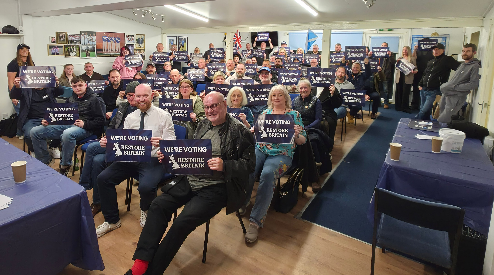

News
Airdrie, North Lanarkshire
First area-wide Restore Britain North Lanarkshire meeting

67 people packed the room in Airdrie for the first area-wide
Restore Britain North Lanarkshire meeting of the branch.
Supporters who've been silenced for years stood up and said what
they really think.
No fear. No apology.
North Lanarkshire is waking up, and we're just getting started.
No fear. No apology.
North Lanarkshire is waking up, and we're just getting started.